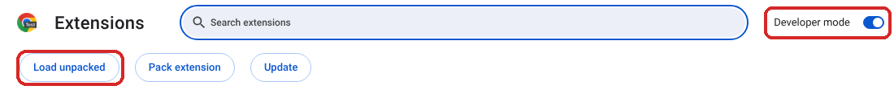
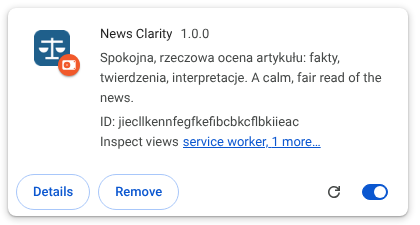
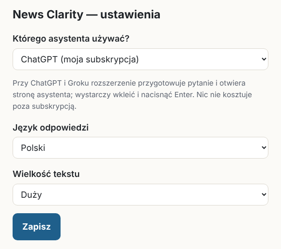
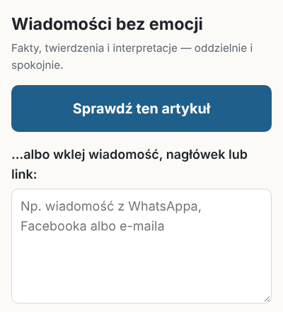

News Clarity — instrukcja
Spokojna, rzeczowa ocena wiadomości jednym kliknięciem w Chrome.
Część 1. Instalacja (raz, ok. 5 minut)
Masz link do Chrome Web Store? To prostsza droga: otwórz link w Chrome → kliknij „Dodaj do Chrome” → „Dodaj rozszerzenie”. Potem przejdź od razu do kroku 5.
Rozpakuj paczkę.
Windows: kliknij plik News-Clarity.zip prawym przyciskiem myszy → Wyodrębnij wszystkie… → Wyodrębnij.
Mac: kliknij plik dwa razy.
Powstanie folder News-Clarity. Przenieś go do Dokumentów i zostaw tam na stałe.
Nie usuwaj i nie przenoś później tego folderu — Chrome czyta rozszerzenie właśnie z niego.
Otwórz stronę rozszerzeń. W Chrome wpisz w pasku adresu
chrome://extensions i naciśnij Enter.
Włącz „Tryb dewelopera” — przełącznik w prawym górnym rogu. Potem kliknij „Załaduj rozpakowane” po lewej.

Na obrazku Chrome jest po angielsku: Developer mode = Tryb dewelopera, Load unpacked = Załaduj rozpakowane.
Wskaż folder. Wejdź do Dokumenty → News-Clarity, zaznacz folder news-clarity (małymi literami) i kliknij Wybierz folder.
Pojawi się taka karta — to znaczy, że się udało:

Ustawienia otworzą się same. Wybierz asystenta, z którego korzystasz (ChatGPT albo Grok), język i wielkość tekstu, potem kliknij Zapisz.

Przypnij ikonkę. Kliknij ikonkę puzzla 🧩 w prawym górnym rogu Chrome, a potem pinezkę obok „News Clarity”. Niebieska ikonka z wagą będzie zawsze widoczna.
Zaloguj się do ChatGPT (chatgpt.com) albo Groka (grok.com) w tym samym Chrome — jeśli jeszcze nie jesteś.
Gotowe! Przy uruchamianiu Chrome może pokazywać ostrzeżenie o „rozszerzeniach w trybie dewelopera”. To normalne — wystarczy je zamknąć.
Część 2. Jak używać
Otwórz artykuł i kliknij niebieską ikonkę z wagą. Z boku otworzy się panel.

Kliknij „Sprawdź ten artykuł”. Otworzy się nowa karta z ChatGPT (albo Grokiem). Pytanie jest już skopiowane.
Kliknij w pole wiadomości, naciśnij Ctrl + V (na Macu Cmd + V), a potem Enter.
Poczekaj 1–2 minuty — asystent sprawdza kilka źródeł.
Inne sposoby
- Wiadomość z WhatsAppa, Facebooka lub e-maila: skopiuj ją, wklej w okienko w panelu, kliknij „Sprawdź ten tekst”, dalej tak samo.
- Tylko fragment artykułu: zaznacz go myszką → prawy przycisk → „News Clarity: sprawdź zaznaczony tekst”.
- Pytanie uzupełniające: zadaj je po prostu dalej w rozmowie z ChatGPT.
Jak czytać odpowiedź
- Pierwsza linijka mówi, czy materiał jest rzetelny, wprowadza w błąd, pomija kontekst, czy nie da się go sprawdzić.
- „Co wiemy na pewno” to fakty potwierdzone przez kilka źródeł. „Twierdzenia” to tylko czyjeś słowa.
- Pewność: niska — wstrzymaj się z udostępnianiem.
- Jeśli odpowiedź wydaje się stronnicza — skopiuj ją i wyślij osobie, która zainstalowała Ci to rozszerzenie — to sygnał, że trzeba poprawić instrukcje.
Gdy coś nie działa
| Co widzisz | Co zrobić |
|---|---|
| Po Ctrl+V nic się nie wkleiło | Wróć do panelu i kliknij „Skopiuj jeszcze raz”. |
| Panel pokazuje duży przycisk „Skopiuj i otwórz” | Kliknij go — zrobi to samo. |
| „Nie mogę odczytać tej strony” | Zaznacz tekst artykułu i użyj prawego przycisku myszy albo wklej tekst do okienka. |
| ChatGPT prosi o logowanie | Zaloguj się jak zwykle i wklej jeszcze raz. |
| Przy instalacji: „Brak pliku manifestu” | Wybrano zły folder. Wskaż folder news-clarity (małymi literami), w którym jest plik manifest.json. |
| Za małe litery | Prawy przycisk na ikonce → Opcje → Wielkość tekstu. |
| Ikonka zniknęła | Kliknij puzzel 🧩 i przypnij ją ponownie. |
Odpowiedzi pisze sztuczna inteligencja. Może się mylić — dlatego pokazuje źródła i poziom pewności.